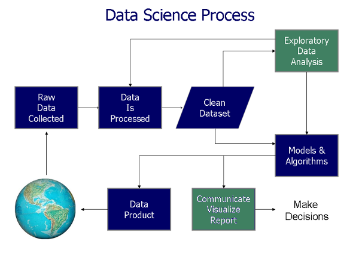
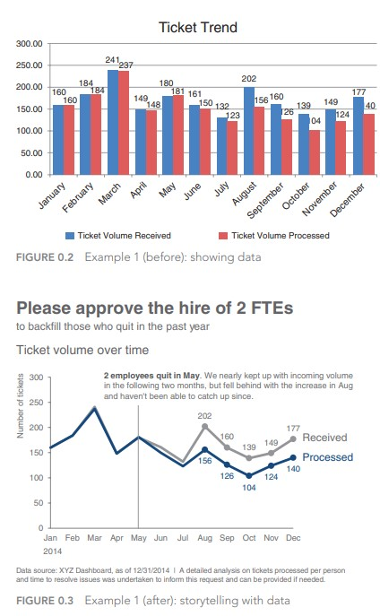
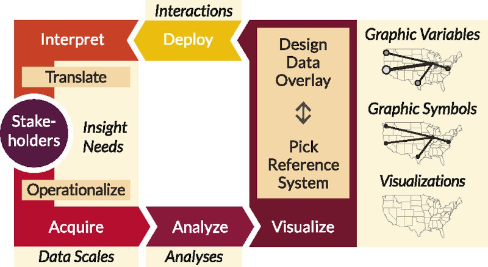
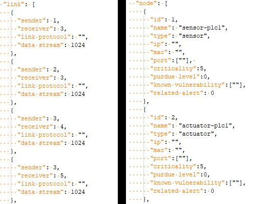
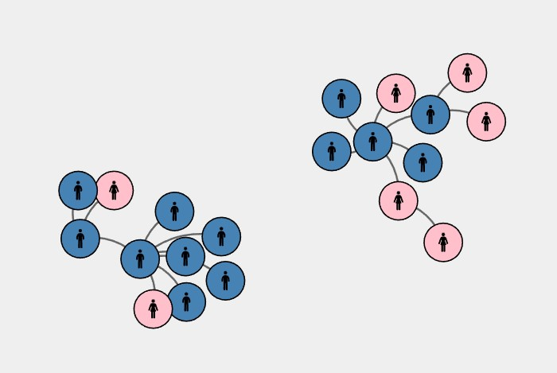

CSC3007 Information Visualization
Background
- CSC Year3, Tri3 module.
The course material is split up into two components — theory and code.
Some web development is a technical requirement for this course. It is expected that students know HTML / CSS / JS.
We'll be using D3 (Data Driven Documents), the defacto data visualization library for the web.
Theory and code
The course material is split up into two components — theory and code.
In the theory portion, we will go through the research paired with lots of real-life case examples.
In the code portion, we will be building interactive data visualizations for the web.
On technology
Visualizations can be built with all kinds of software tool / cloud-based platforms.
However, for an interactive visualization course I will going through how to do it natively for the web.
We'll be using D3 (Data Driven Documents), the defacto data visualization library for the web.
Why D3
- If you're interested in analytics, Excel / Tableau / PowerBI are good non-coding choices.
- If you're familiar with data science languages, Python or R has graphing libraries (ggplot2, plotly, mathlibplot, etc.)
- D3 is used because you want to build beautiful interactive visualizations for the web. You can go really deep to get the interactions you want.
- It also has comprehensive built-in design patterns for visualizations, like geo projections, force simulations, hierarchies, etc.
- Lastly, it is open source and free.
How to build for web
- For web visualization there are many libraries / tools / platforms beyond D3.
- If you are pressed for time for a standard chart type, it might be easier to use other tools / libraries built on top of D3.
- You can also use other libraries (leaflet, highcharts, etc.) to build the components you need.
- There are even full platforms - Mapbox, Cesium, etc. that will allow you to host and build on top of those platforms.
Course expectations
Some web development is a technical requirement for this course. It is expected that you know HTML / CSS / JS.
I might run through some recap refreshers, but it will be quick.
If you are weak in this area you will have to do your own reading and self-revision.
By now you should know how to write some web stuff. There are tons of tutorials on the web.
If you want to use more complicated frameworks / architectures to build your visualizations, please do go ahead. But it is not neccessary.
Course expectations 2
On the JS side, you should also know how to pull data from APIs (AJAX), data formats like JSON (GeoJSON, TopoJSON).
Beyond HTML / CSS / JS, we will also be using Git, a modern version control tool.
Students will be publishing their assignments and work on GitHub and GitPages.
If you do not have a GitHub account, please do sign up for one. You should have one by now.
Objectives
- Identify the different technologies that make interactive maps and data visualization possible.
- Learn to build force diagrams and network maps in D3.
https://keigo-aw.github.io/visualization/
Introduction to Data Viz
Why data visualization?
Wiki definition
To communicate data / information clearly and effectively by encoding it as graphical visual objects (e.g. points, lines).
Examples
Historical viz

Charles Joseph Minard's 1869 diagram of Napoleonic France's invasion of Russia.
It shows the number of men in Napoleon’s 1812 Russian campaign army, their movements, as well as the temperature they encountered on the return path.
Historical viz 2

John Snow's map of the 1854 cholera outbreak in Soho, which helped debunk the then-dominant miasma theory.
Exploratory or explanatory analysis?
Exploratory is turning over 100 rocks to find one or two gems. Cole Nussbaumer Knaflic, the author of “Storytelling with Data,”
Explanatory is showing those one or two gems to someone else.
Exploratory vs Explainatory
Storytelling with data, chapter 1, Nussbaumer
Visualization analysis
- What:
What data does the user see? - Why:
Why does the user want to use a viz tool? - How:
How is the visual encoding and design choices chosen?
These three questions form the data — task — idiom trio.
GE Elections
- What:
GE Elections Results - Why:
A choropleth visualization shows the GE results of each subsdistricts in SG and its trends. - How:
A choropleth map.
CVOID Tracing
A broader definition
Computer-based visualization systems provide visual representations of datasets designed to help people carry out tasks more effectively.
Reading: Data visualization literacy framework
Reading: Chapter 1, Visualization Analysis and Design (Tamara Munzner)
6b: Force diagrams
Network data
Recap: A collection of nodes and links.
Idiom: Force directed layout
What: Data |
Network. Derived: cluster hierarchy atop original network |
How: Encoding |
Point marks for nodes, connection marks for links. |
Why: Task |
Explore topology, locate paths and clusters. |
| Scale | Nodes: Hundreds. Links: Hundreds. Node/link density: L < 4N |
D3 Graph Gallery - Force diagram
Bl.ocks.org: D3-force testing ground, Steve Haroz
Bl.ocks.org: Collapsible force layout, Mike Bostock
Easy Hands-on Session
Basic template
As usual, let's start with a simple HTML template.
<!DOCTYPE html>
<html>
<head>
<meta charset="UTF-8">
<style></style>
</head>
<body>
<svg></svg>
<script src="https://d3js.org/d3.v7.min.js"></script>
</body>
</html>
Add in this D3 code.
<script>
let width = 800,
height = 800;
let svg = d3.select("svg")
.attr("width", width)
.attr("height", height);
let data = [];
for (let i=0; i < 20; i++) {
let obj = {};
data.push(obj);
}
let node = svg.append("g")
.attr("id", "nodes")
.selectAll("circle")
.data(data)
.enter()
.append("circle")
.attr("r", 25)
.style("fill", "steelblue");
</script>
We created a bunch of circles, but we need to space them using D3's force simulation.
<script>
...
let simulation = d3.forceSimulation()
.nodes(data)
.force("charge", d3.forceManyBody().strength(10))
.force("collide", d3.forceCollide().strength(1).radius(10))
.force("r", d3.forceRadial(200, width /2, height /2).strength(0.1))
.alphaMin(0.1)
.on("tick", d => {
node
.attr("cx", d => d.x)
.attr("cy", d => d.y);
});
...
</script>
Force simulation
Play with the values in the force simulation to get an intuitive feel of what the code does.
Can you tweak the amount of cicles to 100, reduce radius of circles, move the center of gravity, change the collision radius?
Why do the circles seem to move from the (0,0) position? How do we fix this?
Add drag interactivity
<script>
...
.call(d3.drag()
.on("start", dragstarted)
.on("drag", dragged)
.on("end", dragended));
function dragstarted(event, d) {
if (!event.active) simulation.alphaTarget(0.3).restart();
d.fx = d.x;
d.fy = d.y;
}
function dragged(event, d) {
d.fx = event.x;
d.fy = event.y;
}
function dragended(event, d) {
if (!event.active) simulation.alphaTarget(0);
d.fx = null;
d.fy = null;
}
...
</script>
Note: The call function is added to the appended circles. With drag added, should be easier to see what some of the parameters do, like d3.forceManyBody.
3 classes of nodes
Let's say our data has 3 classes of nodes. Randomly generating them:
for (let i=0; i < 20; i++) {
let obj = {};
obj.class = Math.floor(Math.random() * 3);
data.push(obj);
}
Can you give each type its own color?
Different centre position
Let's define a different centre x position for each class of nodes.
let xPosition = d3.scaleOrdinal()
.domain([0, 1, 2])
.range([150, 400, 650]);
let simulation = d3.forceSimulation()
.nodes(data)
.force("x", d3.forceX().strength(0.5).x( d => xPosition(d.class) ))
.force("y", d3.forceY().strength(0.2).y( height /2 ))
.force("charge", d3.forceManyBody().strength(0))
.force("collide", d3.forceCollide().strength(0.1).radius(15))
.on("tick", d => {
node
.attr("cx", d => d.x)
.attr("cy", d => d.y);
});
Force change on the fly!
<button id="group1">Multiple Groups</button>
<button id="group2">One Center</button>
d3.select("#group1").on("click", function() {
simulation
.force("x", d3.forceX().strength(0.5).x(d => xPosition(d.class)))
.force("y", d3.forceY().strength(0.2).y( height /2 ))
.alphaTarget(0.3)
.restart();
})
d3.select("#group2").on("click", function() {
simulation
.force("x", d3.forceX().strength(0.1).x(400))
.force("y", d3.forceY().strength(0.1).y(400))
.alphaTarget(0.3)
.restart();
})
Force changes are how simulations like this are done.
Add links data
We'll need to give each node an id, and specify a source and target for each link.
let data = [];
for (let i=0; i < 20; i++) {
let obj = {x: width/2, y: height/2};
obj.id = "node" + i;
obj.class = Math.floor(Math.random() * 3);
data.push(obj);
}
let links = [];
for (let i=0; i < 10; i++) {
let obj = {};
obj.source = "node" + Math.floor(Math.random() * 20);
obj.target = "node" + Math.floor(Math.random() * 20);
links.push(obj);
}
Console.log data and links arrays to inspect the structure.
Draw the links
We'll add the link paths to the SVG. No path data yet, which we'll update in the simulation on tick function.
let linkpath = svg.append("g")
.attr("id", "links")
.selectAll("path")
.data(links)
.enter()
.append("path")
.attr("fill", "none")
.attr("stroke", "black");
Update force simulation
Putting everything together.
let simulation = d3.forceSimulation()
.nodes(data)
.force("x", d3.forceX().strength(0.5).x( width /2 ))
.force("y", d3.forceY().strength(0.2).y( height /2 ))
.force("link", d3.forceLink(links).id(d => d.id))
.force("charge", d3.forceManyBody().strength(20))
.force("collide", d3.forceCollide().strength(1).radius(30))
.on("tick", d => {
node
.attr("cx", d => d.x)
.attr("cy", d => d.y);
linkpath
.attr("d", d => "M" + d.source.x + "," + d.source.y + " " + d.target.x + "," + d.target.y);
});
Console.log simulation.nodes() and simulation.force("link").links() to inspect the structure.
Link parameters
Links can have distances and strengths. Play around with the properties.
...
.force("link", d3.forceLink(links)
.id(d => d.id)
.distance(50)
.strength(0.5)
)
...
Can you change the link path to be a curved path?
How to learn D3
How to learn D3.js, Amelia Watterberger
D3 Graph Gallery, Yan Holtz
Animation and 3D libraries
Animation
3D
Assignment 4
Force network diagram
Setup
To be completed before 31-12-2022(Sat) 2359hrs
- This repo link will be of the format https://<username>.github.io/CSC3007-assignment4
- In the repo create a basic index.html file, and make it visible on GitHub repo pages (it's under the settings tab, under GitHub pages).
- You can put your CSS style tags, HTML and JS script code into one file, or organize them into files/directories.
Why: Task
A force network diagram is a very good way of showing relationships between cases.
In this case, we're visualizing just a small cluster of cases (20 cases) during the Covid situation last year.
Sample screenshot of cases in sample data
What: Dataset
- A very small slice of the dataset for this Covid tracing visualization.
- You can find the assignment dataset for the cases here.
- Similarly, you can find the assignment dataset for the links here.
How: Encoding
The main visualization encoding has been chosen - force network diagram.
You are required to show which cases are male, and which are female.
Beyond that you may theme the cases and links however way you choose.
Template starter
I've included a simple template D3 starter.
A lot more basic than the previous ones, except that I've formatted the links JSON into the format the D3 requires for the force network diagram.
Extra challenge
Interactivity: tooltips to print out the information in the nodes.
Interactivity: mouse hover to show selection of nodes.
Extra, extra challenge
Add in at least one more category (use a button toggle) to visualize beyond gender, e.g. age, vaccination status, etc.
Either (and/or):
- Draw arrows on links to show chain of infection.
- Experiment with nicer links that are not just straight paths.